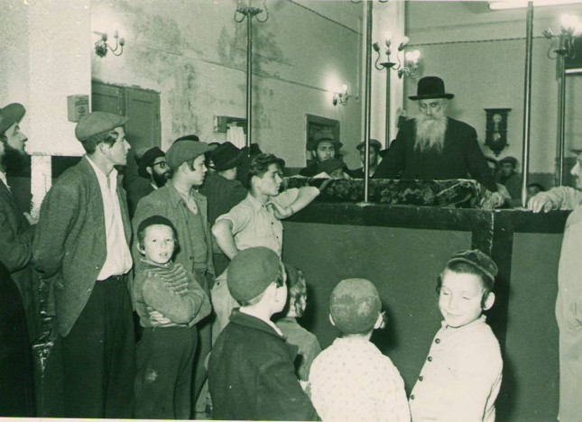

“יש לי בן ברוסיא, אלמן עם שני ילדים יתומים”
זהו סיפור הצלה חובק יבשות. ההורים, הגאון החסיד הרב שאול דובער זיסלין ורעייתו שנמלטו לארץ ישראל, מנסים להציל את בנם ומשפחתו מידי הנאצים והקומוניסטים. בניגוד לכל הסיכויים, ללא קשרים, ללא כספים ובתנאי מלחמה קשים, התעקשו ההורים להעלות את בנם ומשפחתו לארץ הקודש. ההצלחה האירה להם פנים רק בחלקה * על הסיפור
זהו סיפור הצלה חובק יבשות. ההורים, הגאון החסיד הרב שאול דובער זיסלין ורעייתו שנמלטו לארץ ישראל, מנסים להציל את בנם ומשפחתו מידי הנאצים והקומוניסטים. בניגוד לכל הסיכויים, ללא קשרים, ללא כספים ובתנאי מלחמה קשים, התעקשו ההורים להעלות את בנם ומשפחתו לארץ הקודש. ההצלחה האירה להם פנים רק בחלקה * על הסיפור המרגש, בכתבה שלפניכם

אומר את האמת: אם יהודי נאמן היה מספר לי על תכתובות של רב חב”די בארץ הקודש עם טשקנט וסמרקנד בימי המלחמה, הייתי מטיל ספק באמינות הדברים ונמנע מלפרסם דברים כאלו. אך סדרת מסמכים בעברית ברוסית ובאנגלית, מתעדים את פרשת ניסיון ההצלה ההירואי שבראשו עמד הרב זיסלין, שדבק במטרה אחת ויחידה - להציל את בנו ונכדיו מזוועות המלחמה.
הרב זיסלין מבקש את עזרת הג’וינט
דמות ייחודית הייתה דמותו של הרב שאול דובער זיסלין, מחשובי המשפיעים ורבני חב”ד ברוסיה ובארץ הקודש. הוא עלה לארץ ישראל הרבה לפני שאר אחיו החסידים מרוסיה, בשנת תרצ”ד, יחד עם רעייתו הרבנית רחל ובתם רבקה, בעוד בנם ר’ דוד נותר מאחור.
ר’ דוד נשא לאישה את מרת חיה בתו של הרה”ח ר’ פרץ ליין. בני הזוג התגוררו בלנינגרד והיו חלק מקהילת חב”ד הגדולה שפעלה במחתרת. שני ילדים נולדו להם: נפתלי ובתיה. למרבה הצער, אמם לא הספיקה לגדלם, ובטרם פרצה המלחמה, חלתה ונפטרה.
בשלב זה החלו הרב זיסלין ורעייתו לפעול כדי להוציא מרוסיה את בנם ושני נכדיהם, אך כל הניסיונות עלו בתוהו.
בקיץ תש”א השתבשו כל אורחות החיים ברוסיה בעקבות פלישתם של הגרמנים ימ”ש לרוסיה. אלה הגיעו במהירות לפאתי לנינגרד והטילו עליה מצור משלושה צדדים. מאות אלפי אזרחים נמלטו מהצד האחרון שנותר פתוח, וביניהם גם ר’ דוד ושני ילדיו. לאחר דרך רווית תלאות וסבל, הגיעו השלושה לטשקנט, שם שהו באותה תקופה חסידי חב”ד רבים, אף הם פליטים.
הרב זיסלין כיהן באותה עת כרב בית כנסת וחבר הרבנות הראשית בתל אביב. הוא נחשב לאחת הדמויות המכובדות בקהילת חב”ד בארץ הקודש; מראשי אגודת חסידי חב”ד, ופעל רבות למען הקהילה והישיבה של חב”ד בתל אביב.
השמועות על הנעשה באירופה, המריצו אותו להתאמץ יותר כדי להציל את בנו ונכדיו. אין בידינו תיעוד מלא מהפעולות שביצע הרב זיסלין, אך מהתעודים שנותרו בארכיונו עולה, כי הרב זיסלין ביקש מאדמו”ר הריי”צ להשיג מימון מהג’וינט לצורך נסיעת הבן והילדים. על כך השיבו אדמו”ר הריי”צ באגרת (ר”ח סיון תש”ב):
“במענה על מכתבו מערב ראש חודש ניסן העבר, יחוס השי”ת וירחם ויעזור לבנם ר’ דוד וילידיו יחיו בהדרוש להם בגשמיות וברוחניות. מהדזשאינט אי אפשר לקבל עזרה להוצאות נסיעתם ומקומות אחרים [לגייס מהם כסף] לעת עתה אין, והשי”ת יעזר וימציא להם את האמצעים הדרושים לזה ויבואו אליהם כשורה וידריכום בדרכי התורה והמצוה מתוך בריאות הנכונה ופרנסה בהרחבה”.
“יש לי בן ברוסיא, אלמן עם שני ילדים יתומים”
הג’וינט, מסתבר, לא יכול היה לממן את הוצאות הנסיעה, ולא ברור מהיכן קיווה הרב זיסלין לגייס מימון חלופי, אך בחודשים הבאים המשיך להתכתב עם בנו, ובמקביל פנה אל הסוכנות היהודית שהיתה אחראית על העליה לארץ הקודש, וביקש את עזרתה.
בי”ח בסיון תש”ב, פנה אל מר חיים משה שפירא, שכיהן אז כמנהל מחלקת העליה בסוכנות ולימים שר בממשלת ישראל. זה הפנה את הרב זיסלין אל מחלקת העליה בתל אביב. קורע לב לקרוא את תחנוני האב והפצרותיו, במכתב ששיגר בכ”ד סיון תש”ב אל מחלקת העליה:
“יש לי בן ברוסיא, אלמן עם שני ילדים יתומים. אומנתו פנקסן מומחה [כעין מנהל חשבונות] וגם אורג [אריגה]. אני בעצמי פה בארץ זה שמונה שנים (עם אשתי). בני הנ”ל משם ואני מפה השתדלנו כל הזמן להביאם ארצה, אך המניעה היתה משם [בגלל השלטונות הקומוניסטים לא התירו לו לצאת]. מקום מגורו תמיד היה בלענינגרד. זה יותר משנה נפטרה עליו אשתו.
“כשניתכה המלחמה על לענינגרד, נתנה לו שם הממשלה לצאת מלענינגרד, וגם פטרה אותו מהגיוס בשביל הילדים היתומים, ונמצאים עכשו בטאשקענט. בפורים העבר [פורים תש”א, מספר חודשים לפני פלישת הנאצים לרוסיה] קיבלתי ממנו הידיעה שהתאלמן, וכותב שמודיע לנו זאת רק עכשו בשביל שנשתדל להעביר אלינו את הילדים היתומים, ואיתו אינו יודע מה יֵעָשה (מצרף אני פה המכתב), פניתי תיכף להסוכנות בירושלים אל האדון מר מ. שפירא יחי’ [הנזכר, מנהל מחלקת העליה בסוכנות] והשיב לי כי אשתדל לדעת ממנו [מהבן] אם הוא בטוח שינתן שם עבורם רישיון יציאה, אז יתנו לו סרטיפיקטים [אישורי כניסה לארץ הקודש] עבור הילדים. שלחתי לו טלגרמה [מברק] (מצורפת פה העתקתה), בשאלה זו. ולא קיבלתי תיכף תשובה …
“אחר הפסח [תש”ב] בא ארצה מרוסיה מר ליעווינסאן, משכונת בורוכוב [בגבעתיים] הסמוכה לתל אביב, והביא לי דרישת שלום מבני הנ”ל שהזדמן אתו בטאשקענט, ועל ידו מסר אלי שהטעלעגרמא קיבל בזמנה, והשיב לי בטעלעגרמא, רק שאמרו לו בהבית דואר שאינם בטוחים שתתקבל ולכן הוא מוסר הדברים שהודיע בהטעלגרמא, על ידו (של מר לעווינסון) שהוא בטוח ברישיון יציאתם של הילדים, ושאשתדל למהר לשלוח סרטיפיקטים.
“והנה בשבוע העברה ביום 1.6 [ט”ז סיון תש”ב], קיבלתי ממנו טעלעגרמא, מטאשקענט (מצורף פה העתקתה), והוא מבקש לשלוח לו סרטיפיקטים גם עבורו ועבור הילדים. ומציין הגילים ודקדוק השמות [שמות מדוייקים] של שלושתם. מזה רואים ברור שמובטח הוא שגם לו יתנו רישיון יציאה באופן יוצא מן הכלל בשביל להוביל את הילדים היתומים הנה, כמו שפטרו אותו מן חובת הגיוס בשבילם, ונתנו לו לצאת מליענינגרד בשבילם.
“ולכן באתי בבקשה ותחנונים אל כבודם הרמה לרחם על משפחה אומללה זו, לתת עבורם סרטיפיקטים לבוא לארץ ישראל.
“הוא אברך צעיר אלמן עם שני ילדים יתומים, והוא אצלי בן יחיד. הוא איש הגון מאוד דתי במלוא המובן. בצעירותו למד בישיבה במסירות נפש, וכאשר עבד באומנתו הנ”ל סבל הרבה מאוד בשביל שמירת השבת והכשרות וכו’, ועכשיו מצבו נורא ואיום ואין מה להאריך בזה. רחמו נא גם עלינו הוריו ותצילו את שלושת הנפשות האלו. בטוח אני שבודאי ימלאו בקשתי הגדולה הזאת וירשמו את המשפחה הזאת לתת להם הסרטיפיקטים בהקדם היותר אפשרי.
“ביום ד’ העבר פניתי בירושלים בהסוכנות, אל כבוד מעלת האדון מר [משה] שפירא יחי’ [מנהל מחלקת העליה בסוכנות], והוא ציוה עלי לפנות פה במחלקת העליה בתל אביב למען להרשים [לרשום] את משפחת בני ברשימת הסרטיפיקטים, מה גדולה תודתי למפרע. והשי”ת יזכני לראותם פה במהרה”.
כאן מפרט הרב זיסלין את שמות בנו ונכדיו כפי שנרשם במסמכים הרשמיים: הרב דוד זיסלין נולד בכ”ב סיון תרס”ט [כלומר, באותה תקופה היה בן שלושים ושלוש]. הבן נפתלי נולד בתר”צ - בן 12, והבת בתיה - נולדה בתרצ”ז - בת חמש.
את המכתב חותם הרב זיסלין בתחנונים: “דברי המבקש בדמע ובתחנונים, אביו וסבא של הילדים הרב שאול דב זיסלין, רב בבית הכנסת בית שלמה, מאה שערים וחבר בית הדין בהרבנות הראשית למחוז תל–אביב ויפו”.
בשולי המכתב הוסיף הרב זיסלין: “מצרף אני פה גם כן העתקת המכתב מהרבנות הראשית דתל אביב, מה שכתב מכתב המלצה עבורי בענין זה, איך שאני יכול לקבל את הילדים ולא יפלו למעמסה על מי שהוא. הנ”ל”.
החשש הגדול התממש
לאחר שהגיש את המכתב למחלקת העליה, קיבל הרב זיסלין מכתב מבנו בשפה הרוסית, בו הוא מבהיר בצורה ברורה, כי אם יהיו סרטיפיקטים, יוכל לקבל אישורי יציאה מרוסיה עבורו ועבור ילדיו.
בפועל, מאמצי ההצלה עלו בתוהו. לא ברור לנו כיום מה בדיוק עמד להם לרועץ, אך האב האלמן הצעיר, עם שני ילדיו, נותרו ‘שם’.
החזית הרוסית מול גרמניה הלכה והתלהטה, והצבא הזדקק לכמויות עצומות של חיילים. השלטונות החליטו אפוא לבטל את כל הפטורים מהצבא ולגייס את כולם, מלבד מי שבאמת לא יכול היה להילחם. מפעם לפעם ערכו ראשי הצבא מצוד אחר צעירים שלא נשלחו לחזית. וכך, בעיצומה של שנת תש”ד, נלכד ר’ דוד זיסלין בידי ציידי הצבא. למרות מצבו המשפחתי ומחויבותו לגדל את היתומים, נשלח לחזית הבוערת, ממנה לא שב עוד. ר’ דוד נהרג אי שם בקרבות נגד הגרמנים.
גב’ עלקא סירוטה, בת דודתם של הילדים נפתלי ובתיה, מספרת, כי לאחר גיוסו של ר’ דוד, אמה, הגב’ פוזה אקסלרוד נטלה אליה את הילדים וגידלה אותם עד תום המלחמה. רק כאשר חסידי חב”ד הצליחו להבריח את הגבול עם פולין בשנים תש”ו–תש”ז, הצליחו הילדים לצאת את רוסיה יחד עם הדודים ר’ זלמן ומרת חנה ריבקין.
הדבר נודע לסבא הכאוב בארץ הקודש, שהמשיך להפוך עולמות כדי להביא אליו את נכדיו. תקופה קצרה לאחר יציאתם מרוסיה, קיבלו נכדיו אישור כניסה לארץ הקודש. כך עולה ממכתב ששיגר לו אדמו”ר הריי”צ ביום ל’ בניסן תש”ז: “במענה על מכתבו, תודה לד’ אשר קבל רישיון הכניסה לארץ הקודש ת”ו, בעד נכדו ונכדתו יחיו, ויתדבר בזה עם ידידי הרב ר’ בנימין שי’ גאראדעצקי בפאריז, בא כחי לעניני סידור הפליטים ובודאי יעשה בזה כל הדרוש והשי”ת יצליחם בגשמיות וברוחניות. הדורש שלומם ומברכם”.
לאחר תלאות רבות, הגיעו סוף סוף שני הילדים לארץ הקודש, כאן כבר המתינו להם הסב והסבתא, הרב זיסלין והרבנית. הללו אימצום וגידלום במסירות רבה.
לימים התגייס הנכד נפתלי לפלמ”ח ולחם בשורותיו נגד הבריטים. בשנים הבאות הצליח בתחום האקדמאי, ובמשך שנים רבות כיהן כפרופסור בפקולטה לחקלאות ברחובות שעל ידי האוניברסיטה העברית. בחודש אדר תשע”ז הלך לעולמו והוא בן 87 שנים. אחותו בתיה גדלה כחמש שנים אצל הסבא והסבתא, ולאחר מכן המשיכה את לימודיה בבית ספר תורני בתנאי פנימיה. כיום היא מתגוררת בלונדון.
“העם בישראל יזיל דמעה”
השבוע, ביום י”ב בסיון, מלאו חמישים ושלוש שנים לפטירת הרב זיסלין. עם פטירתו התפרסמו ידיעות והספדים בעיתונות החרדית בארץ ישראל. עיתון ‘המודיע’ פרסם ידיעה מיוחדת לצד מודעות אבל על פטירתו.
הג”ר שאול דב זיסלין זצ”ל
תל אביב מוצ”ש (מאת סופרנו) - זקן רבני חב”ד בארץ וזקן חברי הרבנות הראשית לתל אביב–יפו, הרב הגאון החסיד רבי שאול דב זיסלין זצ”ל, נפטר בליל שבת בבית החולים העירוני על שם איכילוב בתל אביב, בשנת ה–83 לחייו, אחרי מחלה קשה וממושכת.
השמועה על פטירתו של הגאון הישיש, גרמה לאבל כבד בעיר, ובעיקר בין חסידי חב”ד בארץ, להם היה רועה נאמן הרבה למעלה מיובל שנים [כשלושים שנה].
בצעירותו למד בליובאוויטש אצל אדמו”ר רבי שלום דובער זצ”ל ונעשה משפיע רוחני של ישיבת חב”ד בליובאוויטש וברוסטוב [ליובאוויטש ושצעדרין].
בטרם עלותו ארצה לפני 30 שנה (ערב שבועות תרצ”ד), שימש כרב באורשה ועיירות אחרות ברוסיה. היה במשך שנים דיין ברבנות הראשית בתל אביב–יפו, ולאחרונה הממונה מטעם הרבנות על המקוואות בעיר. כיהן כרב בית הכנסת ‘בית שלמה’ מאה שערים בתל אביב עד ליומו האחרון במשך 29 שנים רצופות.
היה מן המשפיעים הבולטים של חב”ד בארץ וזכה להעמיד תלמידים הרבה. הקים [ממקימי] את ישיבת תומכי תמימים חב”ד בתל אביב ברחוב הרב קוק, וכאן הרביץ תורה להמוני תלמידיו תורה וחסידות.
לפני שנה הוציא לאור קונטרס מיוחד על דברי חב”ד, שבו הצליח להבהיר את עיקרי תורת חב”ד, לאחרונה הביע את שמחתו לפני מקורביו על שזכה להדפיס חוברת זו, הכוללת בתורה את כל תורת חב”ד.
היה פה מפיק מרגליות ממש, ולדרשותיו יצאו מוניטין, בנאומיו המלהיבים ורבי התוכן, אותן השמיע בהתוועדויות חסידי חב”ד, קנה לו שם נרחב. רבים השכימו על פתחו לקבל מפיו הדרכה, עצה ותושיה, וליהנות מפקחותו ותבונתו הרבה. היה דבוק וקשור בכל נימי נפשו לנשיאי חב”ד כ”ק אדמו”ר הרש”ב נ”ע, כ”ק אדמו”ר הריי”צ נ”ע, ולאחר מכן יבלחט”א כ”ק אדמו”ר מליובאוויטש שליט”א.
נולד בלטביה בעיר קריסלבה, סמוך לדווינסק, לאביו ר’ ניסן. המנוח השאיר אחריו בת, חתן נכדים ונינים. בצוואתו הורה למשפחתו לא להספידו, לא לקברו מחוץ לעיר, לא לסדר מסגרת שחורה סביב מודעות האבל, ולא להכתירו בתארים מיוחדים. במוצאי שבת הועברה המטה מבית החולים אל ביתו, רחוב הכובשים 25 תל אביב, שם התכנסו הרב הראשי, חברי הרבנות הראשית, חסידי חב”ד ותלמידיו הרבים שקראו פרקי תהילים משך כל שעות הלילה.
עם פטירתו אבדה ליהדות הדתית, בכלל ולעדת החסידים בפרט, אבידה גדולה שאין לה תמורה, העם בישראל יזיל דמעה על נפש נקי וצדיק, שבאישיותו, נתגלמה דמות של גאון וחסיד אמיתי, שריד מרבני הדור הישן.
ההלויה תצא ביום א’ (היום) בשעה 12 בצהרים מביתו, רחוב הכובשים 25.
מקורות: ארכיון זיסלין, אבני חן, יד ושם, אתר הפקולטה לחקלאות של האוניברסיטה העברית ובני משפחה.